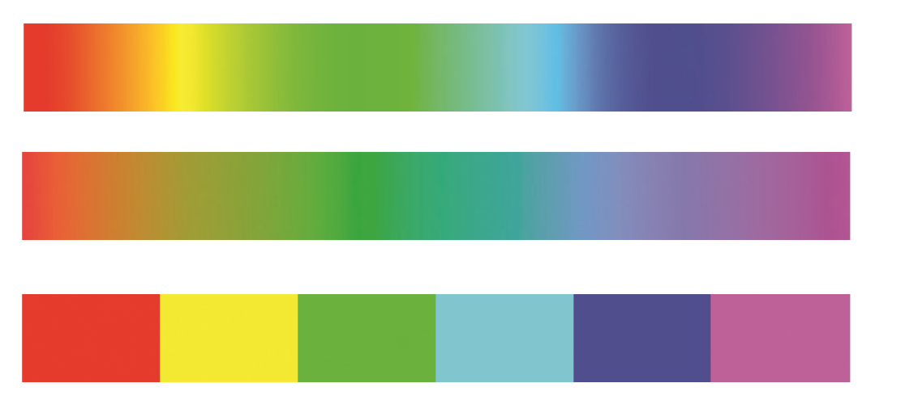

CO582: Computer Interaction and User Experience
Data visualization
Tomas Petricek
email: t.petricek@kent.ac.uk
twitter: @tomaspetricek
office: S129A
{kind=link}
Data science and data visualization
Data age 2025: What sort of data is there?
Open data collected by governments, e.g. data.gov.uk
Not so open data collected by governments
Social networks and other user data
Data collected by businesses or scientists
Multimedia data such as photos, videos, books
Devices, sensors and internet of things
Data age 2025: The growth of the global datasphere

Data age 2025: The growth of the global datasphere

Data visualization: What is the goal?
The goal is to aid our understanding of data by
leveraging the human visual system's ability to
see patterns, spot trends and identify outliers.

Scientific data visualization
Helping experts make sense of complex data

Telling stories with data in media
Make data and facts more accessible
Data visualization: How is it a HCI problem?
Understanding user needs
- Easy for novices or rich for experts?
- Trigger a surprise or be neutral?
- Is the goal exploration or explanation?
Using user experience methods
- Using perception and cognitive theories
- Empirical testing in controlled setting
Do people care about understanding data?

I think that the people of this country have had enough of experts...
Can good visualization get people interested in data?
How data visualizations work
Data visualization: What is a visualization?
Principled mapping of data variables to visual
features such as position, shape, size and color.

What are the variables?
What visual features?
What tasks does it enable?
Could perception mislead us?
Form follows function

Design principles
Form follows function
- Find the best mapping from variables to features
- Considering human perception properties
- Is there objectively best visualization?
Beyond conveying facts
- Visualizations with less straightforward goals
- Trigger emotions, convey complexity, have fun
Systematic visualization design
Part I: Data types
Systematic visualization: Data types

Types of data attributes
- Categorical (e.g. countries, people)
- Ordinal (e.g. education level)
- Quantitative (e.g. time, money, distance)

Types of quantitative scales
- Sequential (e.g. only positive values)
- Diverging (e.g. price change)
- Cyclic (e.g. month, time of day)
More types are maps, hierarchies and networks
Part II: Visual channels
Systematic visualization: Categorical channels
Cannot be measured and ordered
Categories represented as shapes

Categories represented as colors

Systematic visualization: Magnitude channels

Can compare and guess distance
- Position on common scale
- Position on separate scale
- Length of an element
- Angle of rotation
- Area in 2D space
- Color luminance or saturation
EXAMPLES: Mapping data to channels

X position
GDP (quantitative)
Y position
Age (quantitative)
Bubble size
Pop. (quantitative)
Bubble color
Cont. (categorical)
X position
Country (category)
Y position
CO2 (quantitative)
Bar color / offset Year (category)
Part III: Perception properties
Perception: How to use color
Can encode categories and magnitudes

How to use it correctly
- Choose distinguishable categorical colors
- Use linear scale that is perceived linearly

Choose
colors that colorblind people can distinguish!
Use luminance scale that is perceived as linear!
Rainbow can model magnitude (but not linear by default) or categories.
Perception: Choosing channels
Can we estimate relative values in charts?
- Aligned on common scale
- Unaligned on common scale
- Length encoding
- Angles
- Circular areas
- Rectangular areas
Position
(+/- 2x)
Length
(+/- 3x)
Angles
(+/- 5x)
Areas
(+/- 6x)
Part IV: Task analysis
Systematic visualization: Task analysis
Data analytical task (high-level)
Discover new hypothesis
Present some discovery
Nature of search (mid-level)
Lookup (know where) or locate (know what)
Browse general area of interest
Querying of data points (low-level)
Identify information about data point
Compare multiple data points
How to lie with charts
How to lie with charts
Presenting correct data in misleading ways
Poor choice of visual channels
Misusing our ability to spot patterns
Ignoring implicit channel properties
Misleading perception of scaling

Area is harder to see than position
Easy to confuse length (radius) and area

Humans are too good at seeing patterns!
Implied correlation with too few data points.

Value is position on common axis, not length!
Position channel suggests zero as minimum.
Value is length!
(height of the barrel)
Perception of three-dimensional objects is misleading and difficult.
Beyond static charts
Beyond static charts
Animations and interactive charts
Allow exploration of large data
Tell a story through data
Element of surprise in visualization
Make the viewer think critically
Beyond static charts
Visualization for data exploration
- Designed for experts
- Viewer has motivation to explore
Visualization for data presentation
- Readers do not interact with dashboards in NYT
- How to tell a story with data?
- Adapting standard reading metaphors

Animation makes the point stronger.
Neat use of radial projection for circular value!

Scrollytelling
Adapts standard online reading interaction.

You draw it!
Can data visualization make you think more critically?
Summary
Summary: Data visualizations
What is data visualization?
Principled mapping of data variables to visual
features such as position, shape, size and color.
What we need to understand
- Different types of data variables
- Visual features and possible mappings
- Limitations of human perception
Summary: Data variables and visual channels
Data variables
- Categorical (can distinguish between them)
- Ordinal (can be ordered, but not measured)
- Quantitative (sequential, diverging or cyclic)
Visual channels
- Categorical (color, shapes)
- Quantitative (position, length, angle, area and color)
Remember error rates of visual channels!
CO582: Data visualization
What you should remember from this lecture
- Systematic approach to data visualization
- Mapping data variables to visual channels
- Relevant properties of human perception
Tomas Petricek
t.petricek@kent.ac.uk | @tomaspetricek
References
Related courses
Textbooks and papers
Online links